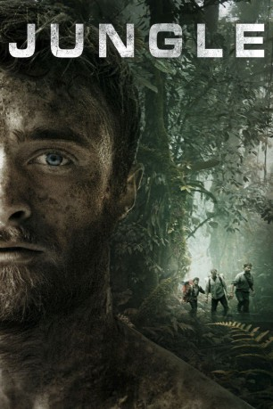
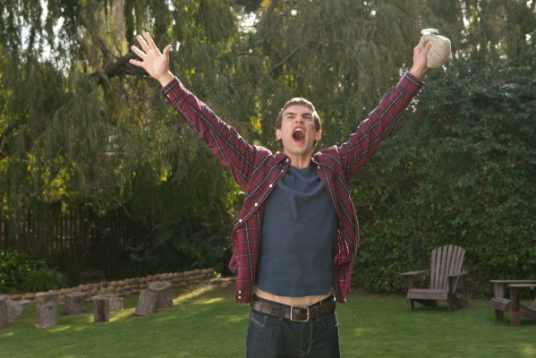

#7359 Jungle
 
 IMDB-Wertung: 6.7 / 10
IMDB-Wertung: 6.7 / 10  Tomatometer: 60
Tomatometer: 60  Metascore: 48
Metascore: 48 
Der junge israelische Backpacker Yossi (Daniel Radcliffe) reist seit Monaten durch Lateinamerika. In Bolivien lernen er und zwei Freunde den charismatischen Karl (Thomas Kretschmann) kennen, der das Land wie seine Westentasche kennt. Sie entschließen sich, gemeinsam eine Expedition in den Dschungel nahe des Amazonas zu machen. Doch Karls Künste als Reiseführer lassen sehr zu wünschen übrig. Der Trip wird schnell zu einer grausamen Odyssee – umgeben von einer unberührten und tödlichen Natur müssen die Abenteurer den Weg zurück in die Zivilisation finden.
Jahr: 2017
Dauer: 115 Minuten
FSK:
Land: Australien Studio: Momentum PicturesTonspuren: DTS - ,
Untertitel: Deutsch, Englisch,
Auflösung: 1080p (1920x800) Größe: 7188 MB
Genre: Action, Thriller, Drama, Abenteuer
Regisseur: Greg McLean
Drehbuch: Yossi Ghinsberg
Soundtrack:
Darsteller:
- Daniel Radcliffe als Yossi Ghinsberg
- Thomas Kretschmann als Karl
-  Alex Russell als Kevin
- Joel Jackson als Marcus
- Lily Sullivan als Amie
- Yasmin Kassim als Kina
- Jacek Koman als Moni Ghinsberg
- Luis Jose Lopez als Tico
- Angie Milliken als Stela
- Paris Moletti als Bolivian
- Joey Vieira als Black Jack
Datei: X:\2017(G-M)\Jungle (2017, FSK, 1920x800).mkv seit 20.10.2017
Festplatte: HD 2017(A-Z)-2018(A-F)
 Es gibt insgesamt 148 Filme in der Gruppe '2017(G-M)'
Es gibt insgesamt 148 Filme in der Gruppe '2017(G-M)'